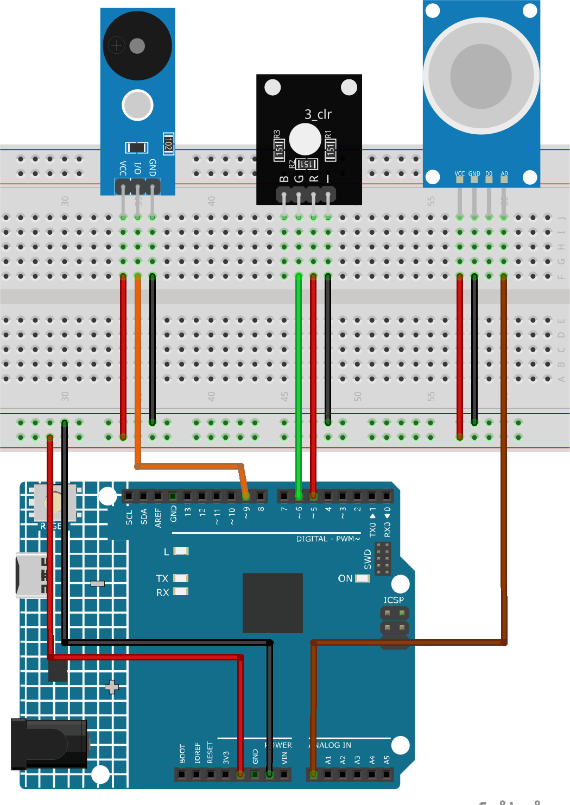

Note
Hello, welcome to the SunFounder Raspberry Pi & Arduino & ESP32 Enthusiasts Community on Facebook! Dive deeper into Raspberry Pi, Arduino, and ESP32 with fellow enthusiasts.
Why Join?
Expert Support: Solve post-sale issues and technical challenges with help from our community and team.
Learn & Share: Exchange tips and tutorials to enhance your skills.
Exclusive Previews: Get early access to new product announcements and sneak peeks.
Special Discounts: Enjoy exclusive discounts on our newest products.
Festive Promotions and Giveaways: Take part in giveaways and holiday promotions.
👉 Ready to explore and create with us? Click [here] and join today!
Gas leak alarm
This project revolves around simulating a gas leak detection scenario using an Arduino Uno board. By incorporating an MQ-2 gas sensor and an RGB LED, this demonstration continuously reads the gas concentration. If this concentration surpasses a predefined threshold, it activates an alarm (buzzer) and illuminates the RGB LED in red. Conversely, if the concentration remains below this threshold, the alarm remains inactive and the LED shines green. It’s crucial to note that this demo is purely illustrative and shouldn’t replace real gas leak detection systems.
1. Build the Circuit


2. Code
Open the
02-Gas_leak_alarm.inofile under the path ofultimate-sensor-kit\code\fun_project\02-Gas_leak_alarm, or copy this code into Arduino IDE.
3. Code explanation
The core principle of the project revolves around continuously monitoring the gas concentration. When the detected gas concentration surpasses a certain threshold, it sets off an alarm and changes the LED’s color to red. This serves as a simulated warning mechanism, indicative of potentially hazardous conditions. If the concentration drops below the threshold, the alarm is deactivated and the LED switches to green, indicating a safe environment.
Defining Constants and Variables
These lines declare and initialize the pin numbers for various components. The
sensorPindenotes the analog pin where the MQ-2 gas sensor is connected.sensorValueis an integer variable storing the sensor’s analog output. ThebuzzerPinindicates the digital pin to which the buzzer is connected. Finally, theRPinandGPinare the pins for the red and green channels of the RGB LED, respectively.// Define the pin numbers for the Gas Sensor const int sensorPin = A0; int sensorValue; // Define the pin number for the buzzer const int buzzerPin = 9; // Define pin numbers for the RGB LED const int RPin = 5; // R channel of RGB LED const int GPin = 6; // G channel of RGB LED
Initialization in
setup()The
setup()function initializes the required settings. Serial communication begins at a baud rate of 9600, allowing us to view sensor readings on the Serial Monitor. Pins for the buzzer and RGB LED are set asOUTPUT, meaning they’ll send signals out to external components.void setup() { Serial.begin(9600); // Start serial communication at 9600 baud rate // Initialize the buzzer and RGB LED pins as output pinMode(buzzerPin, OUTPUT); pinMode(RPin, OUTPUT); pinMode(GPin, OUTPUT); }
Main Loop: Reading Sensor and Triggering Alarm
The
loop()function continually reads the gas sensor’s output. The reading is then displayed on the Serial Monitor for observation. Depending on the sensor value, two scenarios can occur:If the value exceeds 300, the buzzer is activated using
tone(), and the RGB LED turns red.If the value is below 300, the buzzer is silenced using
noTone(), and the LED turns green.
Lastly, a delay of 50 milliseconds is introduced before the next loop iteration to manage the read frequency and reduce the CPU load.
void loop() { // Read the analog value of the gas sensor sensorValue = analogRead(sensorPin); // Print the sensor value to the serial monitor Serial.print("Analog output: "); Serial.println(sensorValue); // If the sensor value exceeds the threshold, trigger the alarm and make the RGB LED red if (sensorValue > 300) { tone(buzzerPin, 500, 300); digitalWrite(GPin, LOW); digitalWrite(RPin, HIGH); } else { // If the sensor value is below the threshold, turn off the alarm and make the RGB LED green noTone(buzzerPin); digitalWrite(RPin, LOW); digitalWrite(GPin, HIGH); } // Wait for 50 milliseconds before the next loop iteration delay(50); }